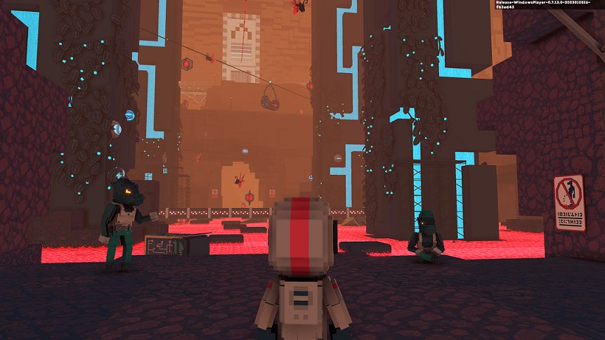
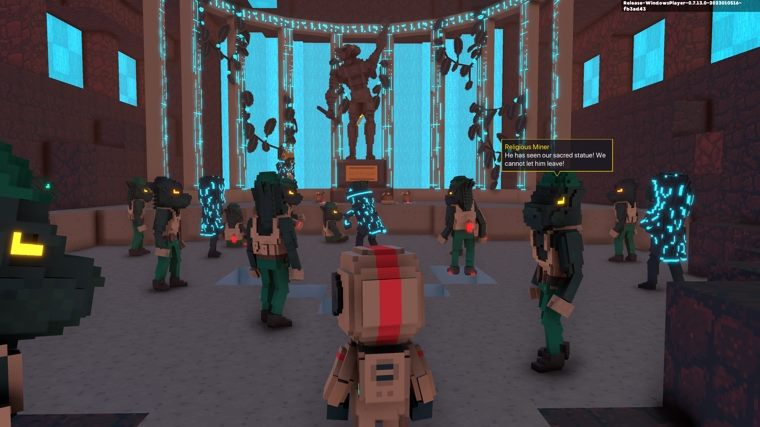
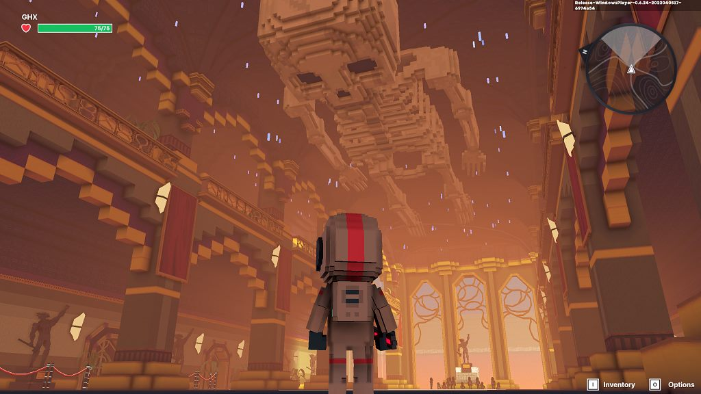
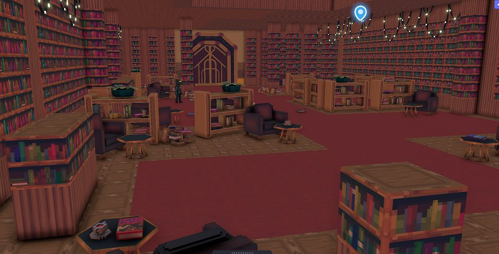
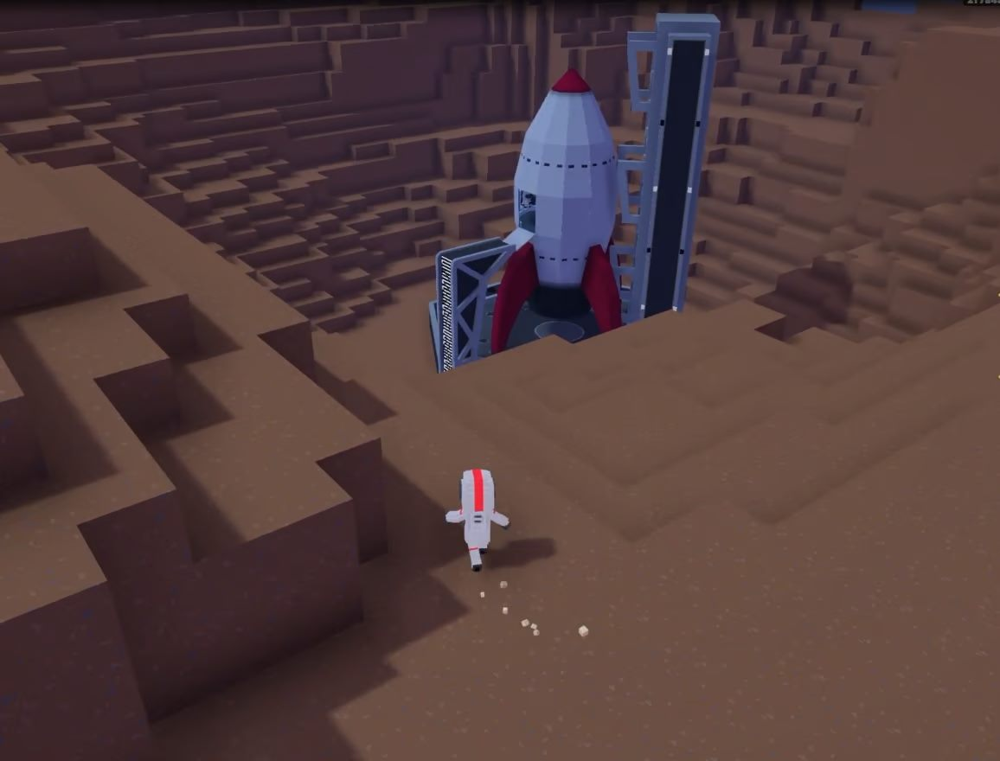

The Traverse
Fabularna platformówka w The Sandbox: odkrywasz marsjańskie spiski, spotykasz przywódców tajemniczych kultów i demaskujesz impostorów.
- Produkcja
- 18 miesięcy
- Zespół
- 6 osób
- Części
- 3
- Platforma
- PC
O projekcie
Fabularna platformówka przygodowa o podróży odkrywcy Astro, którego statek rozbija się na Marsie. Bohater trafia na społeczność gadzich istot, na czele której stoi nikczemny Melon X.
Moja rola: mechaniki gry (obiekty interaktywne, drzwi, urządzenia), łamigłówki do zadań, walki z bossami oraz linia fabularna z dialogami. Pomagałem też grafikom we wdrażaniu modeli do gry.





Stack
Czego się nauczyłem
Projektowania mechanik i systemów interakcji w Sandbox Game Makerze, tworzenia questów, zagadek i elementów fabularnych w voxelowym pipelinie, integracji modeli i assetów oraz pracy w zespole przy dużym projekcie narracyjnym.